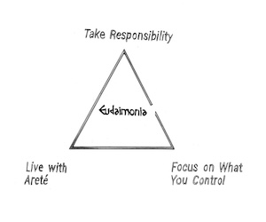

The Key Principles of Stoicism
Although little of the Stoics' original writings exist, many Romans adopted the philosophy as a way of life or art of living (téchnê peri tón bion in the ancient Greek)—as it was intended by the Greeks—and it is from the complete documents of imperial period Romans, especially the writings of Seneca (4 BCE–65 CE), Epictetus (c. 55–135 CE) and Marcus Aurelius (121–180 CE) that we gain most of our information about the ethical system of the original Stoics. Today, Stoic principles have found their way into accepted popular wisdom, as goals to which we should aspire—as in the Serenity Prayer of Twelve Step addiction programs.
Key Tenets

In "The Meditations," Marcus Aurelius reflects on various Stoic principles and ideas, including:
- Acceptance of the Present: Marcus emphasizes the importance of accepting the present moment, acknowledging that it is the only reality we can control.
- Virtue as the Highest Good: He underscores the Stoic belief that virtue is the highest good, and living a virtuous life leads to true happiness.
- The Dichotomy of Control: Marcus distinguishes between things that are within our control (our thoughts, choices, and actions) and those that are not (external events and circumstances). He advises focusing on the former and accepting the latter with equanimity.
- Impermanence and Change: He reflects on the impermanent nature of all things, teaching that we should not become attached to material possessions or fleeting pleasures.
- Duty and Civic Responsibility: Marcus emphasizes the importance of fulfilling one's duty and civic responsibilities, even in the face of adversity.
- Mindfulness and Self-Examination: He encourages introspection and self-examination to better understand one's thoughts and emotions and to align them with reason and virtue.
- Compassion and Empathy: Marcus advocates for compassion and empathy toward others, recognizing our shared humanity.
- Fate and Providence: While acknowledging the role of fate, he emphasizes that individuals have the power to choose how they respond to external events.
- Moderation and Self-Discipline: He promotes moderation in all things and the practice of self-discipline to avoid excesses.
- Contemplation of Death: Marcus often contemplates the inevitability of death, urging readers to live each day as if it were their last and to focus on leaving a legacy of virtue.
More trivia about Marcus:
- Marcus Aurelius was a Roman Emperor: He served as the Roman Emperor from 161 AD to 180 AD as part of the Antonine Dynasty.
- Co-Emperor with Lucius Verus: Marcus Aurelius ruled alongside his adoptive brother Lucius Verus, which was a rare occurrence of two emperors sharing power.
- Famous Stoic Philosopher: Marcus Aurelius is known not only for his role as emperor but also as one of the most renowned Stoic philosophers. His personal journal, "The Meditations," is a classic work of Stoic philosophy.
- Meditations Were Not Meant for Publication: "The Meditations" were not written for public consumption. They were a private collection of thoughts and reflections that he wrote to himself as a form of self-improvement and guidance.
- Military Campaigns Against Germanic Tribes: As an emperor, Marcus Aurelius spent a significant portion of his reign on the northern frontiers of the Roman Empire, leading military campaigns against Germanic tribes.
- The Plague of Cyprian: During his rule, the Roman Empire faced the devastating Antonine Plague, which may have been a precursor to the later and more famous Plague of Cyprian.
- Philosophical Influences: Marcus Aurelius was heavily influenced by the Stoic philosophy of Epictetus, which emphasized virtue, wisdom, and self-control.
- Concern for Civic Duty: He was known for his dedication to the welfare of the Roman people and his sense of civic duty, often putting the needs of the empire above his personal desires.
- Death and Succession: Marcus Aurelius died in 180 AD and was succeeded by his son Commodus, whose rule marked a significant departure from Marcus's philosophy and principles.
- Posthumous Influence: Despite his death, Marcus Aurelius's writings continue to be widely read and respected today, making him one of the most enduring figures in philosophy and Roman history.